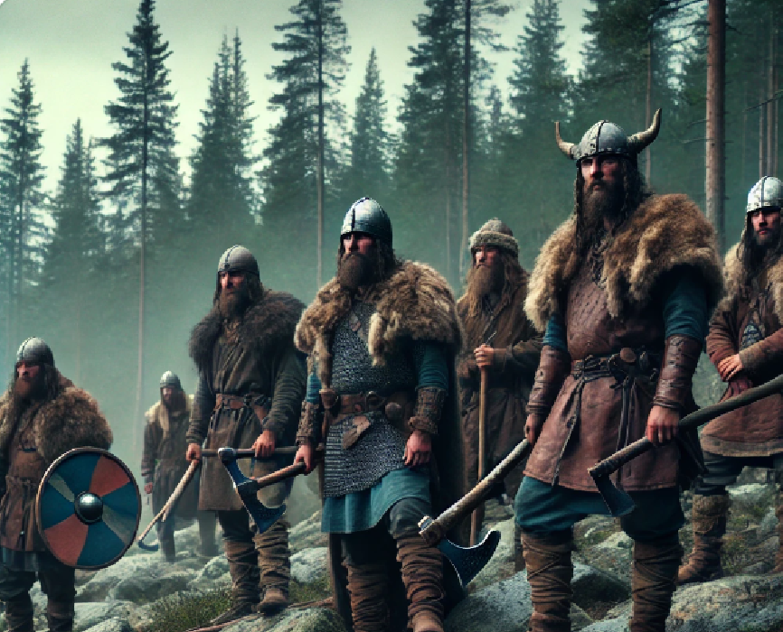
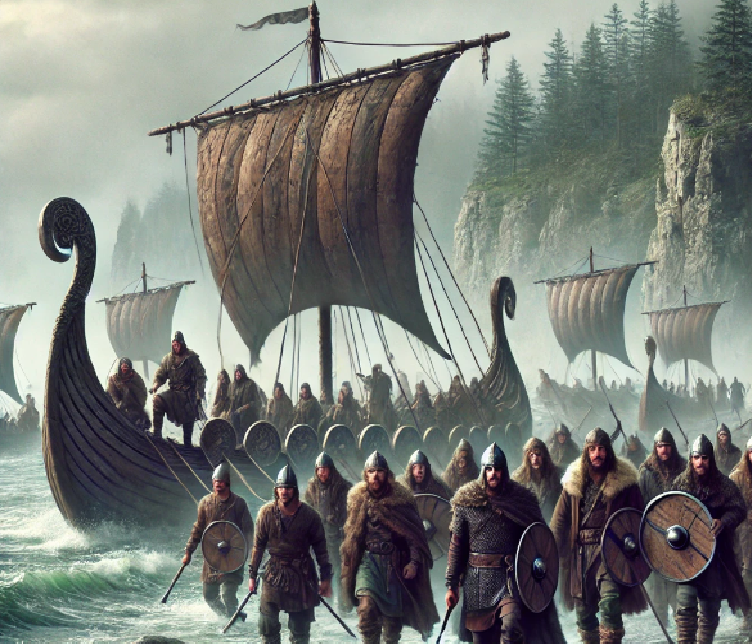

vikings
Introduction
The Vikings were seafaring Scandinavian people from present-day Norway, Denmark, and Sweden, who lived during the Viking Age, roughly from the late 8th century to the early 11th century (793–1066 AD). They are well-known for their roles as raiders, explorers, traders, and settlers, leaving a significant impact on European history and culture.
Key Aspects of Viking
- Raiding and Exploration
The Vikings are famously associated with raids, the most notable of which occurred in 793 AD when they attacked the Lindisfarne monastery in England. This marked the beginning of the Viking Age. They targeted coastal towns, monasteries, and villages across Europe, using their fast, shallow-draft longships to strike quickly and retreat.
However, Vikings were not just raiders. They were also remarkable explorers and traders. They ventured far beyond Scandinavia, reaching areas as distant as North America (Vinland, discovered by Leif Erikson around 1000 AD), Russia, Byzantium (Constantinople), and even parts of the Islamic world.
- Settlers and Traders
While their reputation as brutal raiders is well-known, many Vikings also settled in the lands they explored. They founded settlements in areas such as
-
Iceland: Discovered by Norse explorers around 870 AD, it became a significant Viking settlement.
-
Greenland: Settled by Erik the Red in 982 AD.
-
Britain and Ireland: Norse Vikings established the Danelaw in eastern England and founded cities like Dublin.
-
Normandy (France): In 911, Viking leader Rollo was granted land by the French king Charles the Simple, and his descendants became the Dukes of Normandy.
In addition to settlements, Vikings were also engaged in extensive trade networks. They traded furs, amber, walrus ivory, and slaves in exchange for silver, gold, spices, and other goods from Europe and the Middle East.
- Governance and Social Structure
Viking society was divided into three main classes:
- Jarls (Nobles): The upper class, often chiefs or powerful landowners.
- Karls (Freemen): The middle class, consisting of farmers, warriors, and craftsmen.
- Thralls (Slaves): The lower class, made up of enslaved people captured during raids or sold into servitude.
- End of the Viking Age
The Viking Age came to an end in 1066 AD, marked by the Battle of Stamford Bridge in England, where the Norwegian king Harald Hardrada was defeated by the English King Harold Godwinson. Additionally, the increasing spread of Christianity and the centralization of European kingdoms gradually assimilated Viking culture into the broader European Christian context.
Viking Involvement in Britain

- Raids on Britain
The first recorded Viking raid in Britain occurred in 793 AD at the Lindisfarne Monastery on the northeast coast of England. This brutal attack shocked Christian Europe and marked the beginning of the Viking Age. For the next several centuries, Viking raiders would return to Britain, targeting monasteries and coastal settlements, which were often wealthy and poorly defended.
-
793 AD (Lindisfarne Raid): The iconic beginning of Viking attacks on Britain.
-
794-850 AD: A series of smaller raids focused on looting and taking slaves.
-
865 AD (Great Heathen Army): Rather than just raiding, the Vikings started large-scale invasions aimed at conquering and settling.
- The Great Heathen Army
In 865 AD, a large Viking force known as the Great Heathen Army landed in East Anglia, not just to raid but to conquer. Led by famous Viking leaders like Ivar the Boneless and Halfdan Ragnarsson, they moved through much of England, capturing large swaths of territory, including York in 866, making it the capital of a Viking kingdom.
- The Danelaw
The Danelaw refers to the region of England where Viking laws and governance took hold after the invasions. By 878 AD, much of northeastern England was under Viking control. The Treaty of Wedmore between King Alfred the Great of Wessex and the Viking leader Guthrum formalized the division of England into the Anglo-Saxon south and west, and the Viking-controlled Danelaw in the north and east.
-
Key cities in the Danelaw: York (Jorvik), Derby, Nottingham, and Leicester.
-
Influence on governance: The Vikings brought their own legal system, customs, and language to the region. This integration significantly impacted the local culture, governance, and economy.
- Viking Settlements and Integration
The Vikings did not just raid and conquer; many of them settled in Britain and integrated into local society. Over time, they established farming communities, traded, and intermarried with the local Anglo-Saxon population.
- York (Jorvik): Became a thriving Viking city and a hub of commerce and culture.
- Anglo-Viking hybrid culture: The Viking settlers assimilated and influenced local traditions, particularly in language, governance, and law.
- Resistance from Anglo-Saxon Kings
While the Vikings controlled much of northern and eastern England, they faced strong resistance from Anglo-Saxon kings, particularly Alfred the Great of Wessex. Alfred successfully defended his kingdom against the Vikings, securing a decisive victory at the Battle of Edington in 878 AD. He was instrumental in maintaining a Christian, Anglo-Saxon hold on southern England.
- Alfred's Reforms: Alfred reorganized the military, built a network of fortified towns (burhs), and created a navy to counter Viking raids.
- Christianity vs. Paganism: Alfred also promoted Christianity, contrasting it with the Vikings' paganism, which he saw as central to his moral and political cause.
- Return of Viking Raids (Late 10th Century)After a period of relative peace, new waves of Viking attacks began in the late 10th century, led by figures like Sweyn Forkbeard and his son Cnut the Great. Sweyn Forkbeard invaded in 1013, forcing the English king Æthelred the Unready to flee. Sweyn briefly became king of England before his death in 1014.
- Cnut the Great (1016–1035): Sweyn’s son Cnut took over the throne and established the North Sea Empire, ruling over England, Denmark, and Norway. His reign marked a time of peace and prosperity, with Viking rulers blending into the Anglo-Saxon political structure.
- End of Viking Rule in England
The Viking influence in England waned after Cnut’s death in 1035. Although Viking rule continued through his sons for a short time, by 1066 the Anglo-Saxon king Harold Godwinson had reclaimed the throne. The end of Viking influence in Britain came with the Battle of Stamford Bridge in 1066, where Harold Godwinson defeated the Norwegian king Harald Hardrada, marking the end of large-scale Viking invasions in England.
However, shortly after Stamford Bridge, Harold faced the Norman Conquest, as William the Conqueror invaded England from Normandy (a region originally settled by Vikings). This event reshaped the political landscape of England but also demonstrated the enduring Viking legacy, as William himself was a descendant of Viking settlers.


the ferst vikings
The first Vikings were Scandinavian seafarers who emerged during the late 8th century, known for their raids,
exploration, and trading across Europe, Asia, and even North America. They originated from modern-day Denmark,
Norway, and Sweden, and their activities marked the beginning of the Viking Age, which spanned from around
793 AD to 1066 AD.
The Viking raids began with attacks on monasteries, the most famous being the raid on Lindisfarne in 793, which shocked Europe due to its brutality and the vulnerability of the target. Over time, the Vikings transitioned from small-scale raiders to establishing settlements and kingdoms, particularly in England, Ireland, and Normandy (France).
They were known for their advanced shipbuilding skills, which allowed them to navigate rivers and seas with ease. While often seen as warriors, Vikings were also traders, explorers, and settlers. They traveled as far east as Russia and Constantinople, and even reached North America around 1000 AD, with evidence of their presence found in Newfoundland, Canada.
Their society was organized into clans, and they practiced Norse paganism, worshiping gods like Odin, Thor, and Freyja before gradually converting to Christianity by the end of the Viking Age. The legacy of the Vikings can still be seen today in place names, cultural traditions, and genetic traces across Europe.